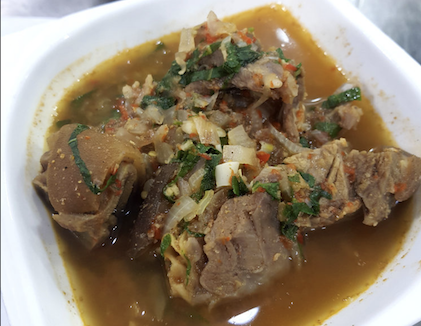

Nigerian Goat Meat Pepper Soup

Description
Nigerian Goat meat pepper soup is a hearty Nigerian soup made with Goat meat
cutlets or chunks, pepper soup spice, and other beautiful
condiments. If you are looking for an authentic Goat meat pepper
soup, this soup certainly delivers the big, bold Nigerian flavors
you will love.
Ingredients
- 1200 g goat meat (washed clean and cut up)
- 1 onion (chopped)
- 2 garlic cloves (crushed)
- 2-3 scotch bonnet / habanero pepper (chopped)
- 1 Tbsp Pepper soup spice
- 1-2 Tbsp coarsely ground crayfish
- 1 small bell pepper
(chopped)
- 1 small bell pepper (chopped)
- 2 stock cubes
- Salt to taste
Steps
- Place meat in a pot, fill with water enough to cover the meat
generously.
- Add the onions, crushed garlic, stock cubes and some salt and allow
to come to a boil
- When the contents in the pot begin to
boil, add the pepper soup spice, ground crayfish ( if using )
and the chopped habanero pepper.
- Cook till the meat is
tender and cooked through, then lower heat to a simmer.
Taste for seasoning and adjust accordingly.
- Add the chopped red bell peppers and the chopped
parsley. Allow simmer for a minute, then turn off
heat.
- Enjoy warm.